Imagens (de cima para baixo e da esquerda para a direita): 1. Titulação; 2. Mistura de soluções; 3. Profissional de Química observando erlenmeyer após o ponto de viragem em uma titulação.
No século I a.C., a rainha egípcia Cleópatra apostou com seu amante, o general romano Marco Antônio, que ela poderia dar o jantar mais caro da história. Na hora marcada, tudo o que havia sobre a mesa era uma taça cheia de vinagre.
Cleópatra retirou cuidadosamente seus brincos de pérolas, esmagou-os e jogou os restos na vasilha, onde se dissolveram. A rainha egípcia não só ganhou a aposta com essa mistura de pérola e vinagre como inventou um novo produto:
os suplementos de cálcio.
[...]
KENSKI, Rafael. “Que mistura: as histórias curiosas da química”.
Superinteressante , 30 set. 2002. Abril Comunicações S. A. Disponível em: <https://super.abril.com.br/ciencia/que-mistura-as-historias-curiosas-da-quimica/>. Acesso em: 3 ago. 2021.
Como é possível descobrir a concentração da solução de pérola e vinagre?
Como descobrir a quantidade de vinagre que devemos adicionar à solução caso desejemos um suplemento de cálcio mais diluído?
Neste capítulo serão abordadas as habilidades
EM13CNT101
e
EM13CNT301
.
Diluição
Diluir soluções consiste em adicionar mais solvente a uma solução já existente. Os reagentes químicos de laboratório são vendidos em determinada concentração, como o ácido sulfúrico, por exemplo, que é vendido na forma de solução
com 16 mol/L. Se desejarmos utilizar uma solução desse ácido com 1 mol/L, será necessário realizar uma diluição.
Como a quantidade de matéria do soluto não se altera durante a diluição, podemos afirmar que:
nsoluto antes=nsoluto depois .
Sabemos que: quantidade de matéria
=
molaridade
·
volume, então:
ɱi·Vi=ɱf·Vf
Após a diluição, o volume da solução aumenta, e a concentração diminui, porém
a quantidade de soluto (em quantidade de matéria ou em massa) continua a mesma .
Vamos acompanhar o exemplo: para realizar um experimento, um químico precisa de 50 mL de solução de ácido nítrico (HNO
3 ) com concentração de 0,5 mol/L, mas ele dispõe apenas do ácido concentrado, com 14,5 mol/L. Que volume do ácido concentrado deverá ser diluído?
ɱi·Vi=ɱf·Vf
14,5
·Vi=
0,5
·
50
~Vi=
1,7 mL
Vf=Vi+Vsolvente adicionado
Isso significa que devemos adicionar uma quantidade suficiente de água ao volume de 1,7 mL de ácido para obter 50 mL de solução.
Questão resolvida
1
Uma massa de 0,5 g de um ácido orgânico de massa molar 100 g/mol é colocada em um balão volumétrico com capacidade de 500 mL e, em seguida, completa-se com água. Qual é a concentração em mol/L dessa solução?
Resolução:
Quantidade de matéria do ácido (
n )
==
0,005 mol; volume completado
=
500 mL
=
0,5 L
ɱ=
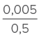
=
0,01 mol/L
Misturas
Existem dois tipos de misturas de soluções: 1) quando misturamos duas soluções de mesmo soluto; 2) quando misturamos duas soluções de solutos diferentes. No primeiro caso, conseguimos calcular a nova concentração facilmente: basta
somar as quantidades de soluto de cada uma e dividir pela soma dos volumes das soluções.
Para exemplificar esse primeiro caso, vamos considerar uma solução de bicarbonato de sódio (NaHCO
3 ) de 40 mL e 0,5 mol/L e outra solução também de bicarbonato de sódio, porém com volume de 60 mL e concentração de 0,8 mol/L. Qual será a concentração da mistura dessas soluções?
Primeiro, calculamos a quantidade de soluto na solução de 0,5 mol/L:
n =ɱ·V
n=
0,5
·
0,04
=
0,02 mol de NaHCO
3
Depois, calculamos a quantidade de soluto na solução de 0,8 mol/L:
n=
0,8
·
0,06
=
0,048 mol de NaHCO
3
Logo, a quantidade de soluto na mistura é 0,02
+
0,048
=
0,068 mol de NaHCO
3 ;
o volume total da mistura é 40 mL
+
60 mL
=
100 mL; e a concentração em quantidade de matéria da mistura é:
ɱ=<003_math.png>=
0,68 mol/L
Questão resolvida
1
UEL-PR 2016 Cada um dos béqueres representados a seguir contém soluções aquosas com partículas de um determinado soluto. O soluto é o mesmo em todos os béqueres.
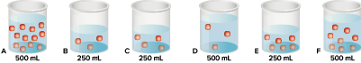
Com base nos conhecimentos sobre concentração de soluções, responda aos itens a seguir.
Quais soluções são as mais concentradas? Explique.
Quando as soluções B e E são combinadas, a solução resultante terá a mesma concentração da solução contida no béquer A? Explique.
Resolução:
Supondo que 1 mol do soluto corresponda à bolinha vermelha na imagem, podemos calcular a concentração de cada recipiente:
Recipiente A:
ɱA=
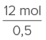
=
24 mol/L
Recipiente B:
ɱB=
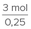
=
12 mol/L
Recipiente C:
ɱC=
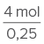
=
16 mol/L
Recipiente D:
ɱD=
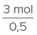
=
6 mol/L
Recipiente E:
ɱE=
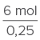
=
24 mol/L
Recipiente F:
ɱF=
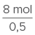
=
16 mol/L
As soluções mais concentradas são A e E, com 24 mol/L.
Recipiente B: 3 mol e 0,25 L; recipiente E: 6 mol e 0,25 L; recipiente B
+
E
:
3
+
6
=
9 mol; volume total
=
0,25 L
+
0,25 L
=
0,5 L.
M=
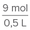
=
18 mol/L
A solução resultante não terá a mesma concentração que a solução A.
Titulação
Um problema recorrente para os químicos é a necessidade de descobrir a concentração de soluções que não foram devidamente identificadas. Para resolvê-lo, é comum fazer uso da técnica de
titulação . Um dos tipos de titulação empregados serve para determinar a concentração de soluções ácidas ou básicas.
No procedimento da titulação ácido-base, utiliza-se uma solução com concentração conhecida, chamada de
titulante , a solução com concentração desconhecida, chamada de
titulado , e um indicador ácido-base, que muda de cor em função do pH do meio. O titulante é colocado em uma bureta, e o titulado em um erlenmeyer com volume definido.
A bureta controla o volume de titulante que será adicionado à solução-problema. Vamos supor que, na bureta, exista uma solução básica de KOH e, no erlenmeyer, uma solução ácida de HBr. Conforme adicionamos KOH ao HBr, a reação KOH(aq)
+
HBr(aq)
➝
KBr(aq)
+
H
2 O(
ℓ
) vai acontecendo.
O fim da titulação é chamado de ponto de equivalência e ocorre quando a quantidade de matéria da base se iguala à quantidade de matéria do ácido. Esse ponto é identificado pela alteração de cor do indicador ácido-base.
Vamos supor que 40 mL de HBr com concentração não conhecida tenha sido titulado com KOH 0,6 mol/L. Ao final da titulação, a bureta mostrou que foram gastos 26 mL da base. Qual é a concentração molar do HBr?
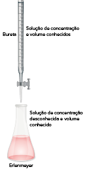
KOH(aq)
+
HBr(aq)
➝
KBr(aq)
+
H
2 O(
ℓ
)
ɱKOH=
0,6 mol/L
ɱHBr=
?
VKOH=
26 mL
VHBr=
40 mL
Podemos afirmar que no fim da titulação
nKOH=nHBr
nKOH=ɱKOH·VKOHnHBr=ɱHBr·VHBr
nKOH=
0,6
·
0,026 0,0156
=ɱHBr·
0,040
nKOH=
0,0156 mol
ɱHBr=
0,39 mol/L
Agora, vamos supor que a solução-problema seja a base Ca(OH)
2 , e o titulante seja o HC
ℓ
. Temos 25 mL de Ca(OH)
2 no erlenmeyer e gastamos 12 mL de HC
ℓ
1,5 mol/L para realizar a titulação. Qual será a concentração em quantidade de matéria da base?
2 HC
ℓ
(aq)
+
Ca(OH)
2 (aq)
➝
CaC
ℓ2 (aq)
+
2 H
2 O(
ℓ
)
ɱ=
1,5 mol/L
ɱ=
?
V=
12 mL
V=
25 mL
Como a proporção é de 2:1, não podemos afirmar que a quantidade de matéria do ácido é igual à quantidade de matéria da base, mas sim o dobro. Então: 2
·n
HC
ℓ=nCa(OH)2 .
n
HC
ℓ=ɱ·V 2 HC
ℓ
1 Ca(OH)
2
n
HC
ℓ=
1,5
·
0,012 0,018
x
n
HC
ℓ=
0,018 mol
x=
0,009 mol
nCa(OH)2=ɱ·V
0,009
=ɱ·
0,025
ɱ=
0,36 mol/L
Somente é possível afirmar que a quantidade de matéria do ácido será igual à quantidade de matéria da base quando a proporção na reação de neutralização for de 1:1.
Questão resolvida
1
UFSM-RS O leite de magnésia, usado como antiácido e laxante, contém em sua formulação o composto Mg(OH)
2 . A concentração de uma amostra de 10 mL de leite de magnésia que foi titulada com 12,5 mL de HC
ℓ
0,5 mol/L é, em mol/L, de:
0,1
0,3
0,5
0,6
1,2
Resolução:
Alternativa B
Mg(OH)
2 (aq)
+
2 HC
ℓ
(aq)
➝
MgC
ℓ2 (aq)
+
2 H
2 O(
ℓ
)
Temos, então, a proporção de 1 base : 2 ácido.
Primeiro, calculamos a quantidade de matéria do ácido:
n=ɱ·V
n=
0,5
·
0,0125
=
0,00625 mol
Depois, descobrimos a quantidade de matéria da base utilizando a proporção:
1 Mg(OH)
2 2 HC
ℓ
x 0,00625
x=
0,003125 mol Mg(OH)
2
Agora que temos a quantidade de matéria da base e o volume, podemos calcular a concentração:
n=ɱ·V
0,003125
=ɱ·
0,010
⇒ ɱ=
0,3125 mol/L
Aplicando conhecimentos
1
O cloreto de benzalcônio é um desinfetante que está à venda na forma concentrada e é usado na limpeza de locais onde vivem animais como cachorros e gatos. O frasco vendido tem concentração de 150 g/L e indica diluir 100 mL
dessa solução em 5 litros de água para limpar o chão. Qual é a concentração do desinfetante após a diluição?
1,5 g/L
30 g/L
3 g/L
15 g/L
0,3 g/L
2
Em um laboratório, é comum existirem frascos para o descarte de soluções químicas, evitando que cheguem aos esgotos, prejudicando o meio ambiente. Um técnico descartou, no mesmo frasco, 50 mL de uma solução 2 mol/L de HC
ℓ
e 10 mL de outra solução também de HC
ℓ
, mas com concentração 0,2 mol/L. Qual era a concentração da solução no recipiente de descarte?
3
Acidentalmente um aluno de Química derrubou 5 mL de uma solução de NaOH 0,1 mol/L em um frasco de ácido fluorídrico (HF) com 100 mL e concentração 0,1 mol/L. Qual é a concentração final do ácido nessa mistura?
4
Com o tempo, o rótulo de uma solução básica de Ca(OH)
2 descolou-se e foi perdido, assim sua concentração ficou desconhecida. Para fazer um novo rótulo, resolveu-se titular 25 mL da base com ácido clórico (HC
ℓ
O
3 ), de concentração 0,5 mol/L, gastando-se 12 mL. Qual é a concentração da base?
5
FICSAE-SP 2016 Para determinar a pureza de uma amostra de ácido sulfúrico (H
2 SO
4 ), uma analista dissolveu 14 g do ácido em água até obter 100 mL de solução. A analista separou 10 mL dessa solução e realizou a titulação, utilizando fenolftaleína como indicador. A neutralização dessa alíquota
foi obtida após a adição de 40 mL de uma solução aquosa de hidróxido de sódio (NaOH) de concentração 0,5 mol/L. O teor de pureza da amostra de ácido sulfúrico analisado é, aproximadamente,
18%
50%
70%
90%
Consolidando saberes
1
Mackenzie-SP 2018 Em uma embalagem de 2 L de água sanitária, facilmente encontrada em supermercados, encontra-se a seguinte informação: “O teor de cloro ativo do produto varia de 2% a 2,5% (m/V)”. Essa solução
pode ser utilizada para tratamento de água de piscina nas concentrações de 1,0 a 2,0 mg de cloro ativo por litro; sendo que, acima de 2,0 mg de cloro ativo por litro, a água se torna irritante aos olhos. Em duas piscinas
(A e B), de capacidades volumétricas diferentes, foram adicionados 2 L de água sanitária a cada uma delas. Desta forma, ocorreu a diluição da água sanitária na água contida em cada piscina, conforme descrito na tabela abaixo:
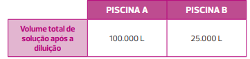
Sendo assim, foram feitas as seguintes afirmações.
Há de 20 a 25 g de cloro ativo por litro dessa solução comercial.
Na piscina A, a solução formada após a diluição seria irritante aos olhos do usuário dessa piscina.
Na piscina B, a solução formada após a diluição seria adequada ao tratamento de água.
Das afirmações realizadas,
Nenhuma é correta.
São corretas, apenas, I e II.
São corretas, apenas, II e III.
São corretas, apenas, I e III.
Todas são corretas.
2
EsPCEx-SP 2017 Em uma aula prática de Química, o professor forneceu a um grupo de alunos 100 mL de uma solução aquosa de hidróxido de sódio de concentração 1,25 mol/L. Em seguida solicitou que os alunos realizassem um
procedimento de diluição e transformassem essa solução inicial em uma solução final de concentração 0,05 mol/L. Para obtenção da concentração final nessa diluição, o volume de água destilada que deve ser adicionado é de
2400 mL
2000 mL
1200 mL
700 mL
200 mL
3
UEMG 2018 Em um balão volumétrico, foram adicionados 60 mL de uma solução de HNO
3 de concentração desconhecida e 40 mL de solução de KOH 0,4 mol/L. A solução resultante se mostrou neutra. Qual a molaridade da solução de ácido nítrico?
0,1 mol/L
0,25 mol/L
0,4 mol/L
0,55 mol/L
4
UEM-PR 2017 Um estudante tem à sua disposição no laboratório água destilada e as seguintes soluções:
Frasco I – 300 mL de solução aquosa de NaOH a 5 mol/L
Frasco II – 100 mL de solução aquosa de H
2 SO
4 a 1 mol/L
Frasco III – 100 mL de solução aquosa de H
2 SO
4 a 3 mol/L
Assinale os procedimentos realizados corretamente pelo estudante.
01.
Para preparar 500 mL de solução aquosa de NaOH a 0,1 mol/L, ele colocou 10 mL da solução do frasco I em um balão volumétrico e completou os 500 mL com água destilada.
02.
Para preparar 500 mL de uma solução aquosa de NaOH a 2 mol/L, ele colocou 200 mL de água destilada e completou os 500 mL com a solução do frasco I.
04.
Para neutralizar totalmente 20 mL da solução do frasco I, ele adicionou 50 mL da solução do frasco II.
08.
Para preparar uma solução de H
2 SO
4 a 2 mol/L, ele misturou 100 mL da solução do frasco II com 100 mL da solução do frasco III.
16.
Para preparar 100 mL de solução de concentração de íons H
+ a 1,5 mol/L, ele colocou 50 mL da solução do frasco III em um balão volumétrico e completou os 100 mL com água destilada.
Soma:
5
UFRGS 2018 O soro fisiológico é uma solução aquosa 0,9% em massa de NaC
ℓ
. Um laboratorista preparou uma solução contendo 3,6 g de NaC
ℓ
em 20 mL de água. Qual volume aproximado de água será necessário adicionar para que a concentração corresponda à do soro fisiológico?
20 mL
180 mL
380 mL
400 mL
1000 mL
6
IME-RJ 2016 Uma solução aquosa A, preparada a partir de ácido bromídrico, é diluída com água destilada até que sua concentração seja reduzida à metade. Em titulação, 50 mL da solução diluída consomem 40 mL de uma solução
de hidróxido de potássio 0,25 mol/L. Determine a concentração da solução A, em g/L.
7
Unesp 2017 A dipirona sódica monoidratada (massa molar
=
351 g/mol) é um fármaco amplamente utilizado como analgésico e antitérmico. De acordo com a Farmacopeia Brasileira, os comprimidos desse medicamento devem conter de 95% a 105% da quantidade do fármaco com solução de iodo (I
2 ) a 0,050 mol/L, utilizando amido como indicador, sendo que cada mol de iodo utilizado na titulação corresponde a um mol de dipirona sódica monoidratada. Uma solução aquosa foi preparada pela dissolução de
um comprimido de dipirona sódica monoidratada, cuja bula declara conter 500 mg desse fármaco. Sabendo que a titulação dessa solução consumiu 28,45 mL de solução de iodo 0,050 mol/L, calcule o valor da massa de dipirona
sódica monoidratada presente nesse comprimido e conclua se esse valor de massa está ou não dentro da faixa de porcentagem estabelecida na Farmacopeia Brasileira.
8
PUC-Rio 2016 Uma solução aquosa de nitrato de prata (0,050 mol/L) é usada para se determinar, por titulação, a concentração de cloreto em uma amostra aquosa. Exatos 10 mL da solução titulan- te foram requeridos para
reagir com os íons C
ℓ– presentes em 50 mL de amostra. Assinale a concentração, em mol/L, de cloreto, considerando que nenhum outro íon na solução da amostra reagiria com o titulante.
Dados: Ag
++
C
ℓ–➝
AgC
ℓ
0,005
0,010
0,025
0,050
0,100
9
< UEPG-PR 2016
A titulação de uma amostra de calcário (carbonato de cálcio impuro), de massa 20 g, consome 100 mL de solução 72 g/L de ácido clorídrico. Sobre o assunto, assinale o que for correto.
Dados: H
=
1 g/mol; Ca
=
40 g/mol; C
=
12 g/mol; O
=
16 g/mol; C
ℓ=
35,5 g/mol.
01.
A fórmula do carbonato de cálcio é CaCO
3
02.
A concentração do ácido clorídrico em mol/L é 2
04.
A porcentagem de pureza do calcário é 50%
08.
O ácido clorídrico é um oxiácido considerado forte em meio aquoso
Soma:
10
Uece 2016 A titulação é um procedimento laboratorial que permite determinar a concentração desconhecida de uma substância a partir de uma substância de concentração conhecida. Em uma titulação representada pela equação:
NaOH
+
HC
ℓ➝
NaC
ℓ+
H
2 O, o equipamento usado para adicionar cuidadosamente o volume adequado da solução de NaOH é denominado:
Pipeta graduada
Proveta
Bureta
Pipeta volumétrica
11
FCMMG 2017 Tem-se observado que muitos médicos (e bons médicos) têm prescrito beber de manhã 2 gotas de Lugol, uma solução de iodo, na prevenção de uma série de enfermidades. Na preparação do Lugol, são misturados 2,5
g de iodo sólido; 5 g de iodeto de potássio e água destilada suficiente para se completar 50 mL. O iodeto de potássio é utilizado para dissolver o iodo devido à formação do íon I
3– . Dados: K
=
39; I
=
127
Analisando o texto e considerando cada gota 0,05 mL, seria INCORRETO afirmar que:
A quantidade de iodo molecular ingerida numa semana é cerca de 3,5
·
10
–2 g.
A quantidade de mol de K
+ ingerida num dia seria de, aproximadamente, 6
·
10
–5 .
As interações existentes no íon I
3– formado são do tipo íon-dipolo induzido.
As espécies químicas presentes no Lugol, solução a 5% (p/v), são iônicas.
12
ITA-SP 2017 Considere duas soluções, X e Y, de um mesmo soluto genérico. A solução X tem 49% em massa do soluto, enquanto a solução Y possui 8% em massa do mesmo soluto. Quer-se obter uma terceira solução, que tenha
20% em massa deste soluto, a partir da mistura de um volume
Vx da solução X com um volume V
y da solução Y. Considerando que todas as soluções envolvidas exibem comportamento ideal, assinale a opção que apresenta a razão V
x /V
y CORRETA.
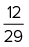
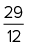
13
FICSAE 2016 O náilon 6,6 e o poliestireno são polímeros que apresentam diversas aplicações na indústria. Um técnico misturou, inadvertidamente, amostras desses polímeros.
Dados: densidade do náilon 6,6
=
1,14 g
·
cm
–3 ; densidade do poliestireno
=
1,05 g
·
cm
–3 ; massa molar do NaC
L =
58,5 g
·
mol
–1
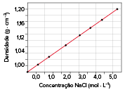
Conhecendo a densidade desses materiais, ele decidiu preparar uma solução aquosa de cloreto de sódio (NaC
ℓ
) para separar as amostras. Para tanto, ele utilizou um balão volumétrico de 5,0 L. A massa de NaC
ℓ
adequada para essa preparação é
120 g.
300 g.
600 g.
1 300 g.
14
EsPCEx-SP 2017
Em uma aula prática de química, o professor forneceu a um grupo de alunos 100 mL de uma solução aquosa de hidróxido de sódio de concentração 1,25 mol/L. Em seguida solicitou que os alunos realizassem um procedimento de diluição e transformassem essa solução inicial em uma solução final de concentração 0,05 mol/L. Para obtenção da concentração final nessa diluição, o volume de água destilada que deve ser adicionado é de
2400 mL
2000 mL
1200 mL
700 mL
200 mL
15
PUC-PR 2015
O hidróxido de cálcio – Ca(OH)
2 –, também conhecido como cal hidratada ou cal extinta, trata-se de um importante insumo utilizado na indústria da construção civil. Para verificar o grau de pureza (em massa)
de uma amostra de hidróxido de cálcio, um laboratorista pesou 5 gramas deste e dissolveu completamente em 200 mL de solução de ácido clorídrico 1 mol/L. O excesso de ácido foi titulado com uma solução de hidróxido de sódio
0,5 mol/L, na presença de fenolftaleína, sendo gastos 200 mL até completa neutralização. O grau de pureza da amostra analisada, expresso em porcentagem em massa, é de:
78%
82%
86%
90%
74%
16
PUC-Rio 2015 O volume de 25 mL de uma amostra aquosa de ácido oxálico (H
2 C
2 O
4 ) foi titulado com solução padrão 0,020 mol/L de KOH.
H
2 C
2 O
4 (aq)
+
2 OH
– (aq)
➝
C
2 O
42– (aq)
+
2 H
2 O(
ℓ
)
A titulação alcançou o ponto de equivalência com 25 mL de solução titulante, assim, a concentração, em mol/L, de ácido oxálico na amostra original é igual a:
1 · 10
–3
2 · 10
–3
1 · 10
–2
2 · 10
–2
1 · 10
–1
17
Unesp 2015 Chama-se titulação a operação de laboratório realizada com a finalidade de determinar a concentração de uma substância em determinada solução, por meio do uso de outra solução de concentração conhecida. Para tanto,
adiciona-se uma solução-padrão, gota a gota, a uma solução-problema (solução contendo uma substância a ser analisada) até o término da reação, evidenciada, por exemplo, com uma substância indicadora. Uma estudante realizou
uma titulação ácido-base típica, titulando 25 mL de uma solução aquosa de Ca(OH)
2 e gastando 20 mL de uma solução padrão de HNO
3 de concentração igual a 0,10 mol/L.
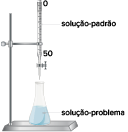
Utilizando os dados do texto, apresente a equação balanceada de neutralização envol vida na titulação e calcule a concentração da solução de Ca(OH)
2 .
18
Mackenzie-SP 2016 200 mL de uma solução aquosa de ácido sulfúrico de concentração igual a 1 mol/L foram misturados a 300 mL de uma solução aquosa de hidróxido de sódio de concentração igual a 2 mol/L. Após o final do processo
químico ocorrido, é correto afirmar que:
A concentração do ácido excedente, na solução final, é de 0,4 mol/L.
A concentração da base excedente, na solução final, é de 0,4 mol/L.
A concentração do sal formado, na solução final, é de 0,2 mol/L.
A concentração do sal formado, na solução final, é de 0,1 mol/L.
Todo ácido e toda base foram consumidos.
19
UFRGS 2015 A uma solução I saturada de K
2 Cr
2 O
7 de cor laranja é adicionada água pura até dobrar seu volume, mantendo-se a temperatura constante. A seguir, são adicionados alguns cristais de K
2 Cr
2 O
7 , sob agitação constante, até que ocorra o aparecimento de um precipitado de K
2 Cr
2 O
7 , obtendo-se a solução II, conforme esquematizado no desenho abaixo.
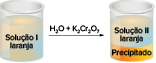
Considerando as concentrações de K
2 Cr
2 O
7 nessas soluções, pode-se afirmar que:
A concentração na solução I é o dobro da concentração na solução II.
O precipitado é solubilizado quando se misturam as soluções I e II.
A tonalidade laranja da solução I é mais intensa que a tonalidade laranja da solução II.
A solução I deve apresentar maior ponto de ebulição que a solução II, quando considerados os efeitos coligativos.
A concentração da solução I é igual à concentração da solução II.
No enem é assim
As questões selecionadas nesta seção são prioritariamente do Enem, mas questões de vestibulares diversos que apresentam características semelhantes aos itens do referido exame também podem ser usadas como recurso para estudo.
1
Unicamp 2021 O oxímetro é usado na triagem para a Covid-19. Acoplado ao dedo, ele emite luz em dois comprimentos de onda (660 nm e 940 nm) e mede a quantidade de luz absorvida (A) em cada caso. A partir disso, determina
a concentração percentual de oxi-hemoglobina (HbO
2 ) e de desoxi-hemoglobina (Hb) no sangue. Valores entre 95 e 100% para HbO
2 indicam normalidade.
Simplificadamente, as quantidades de luz absorvidas em cada comprimento de onda (A) se relacionam matematicamente às concentrações [HbO
2 ] e [Hb] conforme as seguintes equações:
Hb(aq)
+
O
2 (aq)
➝
HbO
2 (aq)
A (em 660 nm)
=
320 [HbO
2 ]
+
3227 [Hb]
A (em 940 nm)
=
1214 [HbO
2 ]
+
693 [Hb].
Considere que uma pessoa tenha chegado ao hospital com baixa saturação de O
2 no sangue e, depois de submetida à oxigenoterapia, começa a ter a saturação normalizada. Em relação às medidas iniciais, quando a saturação de O
2 começa a subir, a absorção de luz indicada pelo oxímetro
diminui em 660 nm e aumenta em 940 nm.
aumenta em 660 nm e diminui em 940 nm.
aumenta em ambos os comprimentos de onda
diminui em ambos os comprimentos de onda.
2
Unicamp 2021 O aumento dos casos da Covid-19 provocou a escassez de álcool etílico em gel no comércio, o que fez a população buscar outros tipos de álcool para se prevenir. No entanto, as opções de álcool disponíveis não
eram eficazes. O recomendado é o álcool 70
°
INPM (% massa/massa). As opções de álcool disponíveis comercialmente à época da escassez aparecem na tabela abaixo.
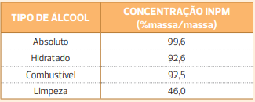
Para produzir álcool 70
°
INPM a partir dos outros tipos disponíveis comercialmente, uma opção possível seria misturar
álcool para limpeza com álcool hidratado, utilizando maior quantidade de álcool para limpeza.
álcool combustível com o álcool absoluto, utilizando maior quantidade de álcool combustível.
álcool absoluto com álcool hidratado, utilizando maior quantidade de álcool absoluto.
álcool para limpeza com álcool hidratado, utilizando maior quantidade de álcool hidratado.
3
UCS-RS A solubilidade é uma propriedade física muito importante do ponto de vista biológico. Veja, por exemplo, o caso das vitaminas. Elas são indispensáveis à dieta alimentar, pois atuam na regulação de muitos processos
vitais. O consumo excessivo de vitamina C parece não ser prejudicial ao organismo, pois qualquer excesso será eliminado pela urina, uma vez que ela é hidrossolúvel. O consumo excessivo de vitamina A, por outro lado, pode ser
prejudicial, pois sendo lipossolúvel, ela acaba sendo retida pelo organismo, principalmente no fígado, produzindo dores de cabeça e insônia. As estruturas químicas das vitaminas A e C estão representadas a seguir.
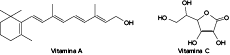
>Em relação à solubilidade das vitaminas A e C, considere as proposições abaixo.
Devido à presença de uma cadeia carbônica relativamente longa que apresenta caráter apolar acentuado, a vitamina A é praticamente insolúvel em água, apesar de ela conter um grupo hidroxila em sua estrutura química.
A vitamina C é hidrossolúvel, devido à presença de vários grupos hidroxila em sua estrutura química que podem interagir com as moléculas de água por meio de ligações de hidrogênio.
Se o coeficiente de solubilidade da vitamina C em água é igual a 330 g/L (a 25
°
C e 1 atm), uma solução aquosa de vitamina C com concentração igual a 100 g/L, nas mesmas condições de temperatura e pressão, encontra-se supersaturada.
Das proposições acima
Apenas I está correta.
Apenas II está correta.
Apenas I e II estão corretas.
Apenas II e III estão corretas.
I, II e III estão corretas.
4
Unioeste-PR 2018 A recristalização é uma técnica de purificação de sólidos. Ela consiste na solubilização a quente do produto em um solvente adequado, filtração da solução para retirada dos contaminantes insolúveis e permite
que a solução atinja a temperatura ambiente (20
°
C) para formação dos cristais purificados. Um produto X deve ser recristalizado. Estão disponíveis quatro solventes, A, B, C e D, e a curva de solubilidade de X nesses quatro solventes (em g soluto/100 mL de solvente) é mostrada abaixo.
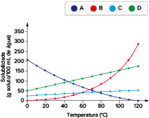
De acordo com as informações, assinale a opção que apresenta o solvente mais adequado para a recristalização de X, na temperatura de 100
°
C, de forma a otimizar o rendimento deste procedimento.
A
B
C
D
Nenhum solvente é adequado
5
Enem 2017 A toxicidade de algumas substâncias é normalmente representada por um índice conhecido como DL
50 (dose letal mediana). Ele representa a dosagem aplicada a uma população de seres vivos que mata 50% desses indivíduos e é normalmente medido utilizando-se ratos como cobaias, pode-se determinar o nível tolerável
de contaminação de alimentos, para que possam ser consumidos de forma segura pelas pessoas. O quadro apresenta três pesticidas e suas toxicidades. A unidade mg/kg indica a massa da substância ingerida pela massa da cobaia.
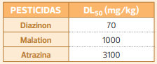
Sessenta ratos, com massa de 200 g cada, foram divididos em três grupos de vinte. Três amostras de ração, contaminadas, cada uma delas com um dos pesticidas indicados no quadro, na concentração de 3 mg por grama de ração, foram administradas
para cada grupo de cobaias. Cada rato consumiu 100 g de ração.
Quais grupos terão uma mortalidade mínima de 10 ratos?
O grupo que se contaminou somente com atrazina.
O grupo que se contaminou somente com diazinon.
Os grupos que se contaminaram com atrazina e malation.
Os grupos que se contaminaram com diazinon e malation.
Nenhum dos grupos contaminados com atrazina, diazinon e malation.
6
Enem 2017 Um pediatra prescreveu um medicamento, na forma de suspensão oral, para uma criança pesando 16 kg. De acordo com o receituário, a posologia seria de 2 gotas por kg da criança, em cada dose. Ao adquirir o medicamento
em uma farmácia, o responsável pela criança foi informado que o medicamento disponível continha o princípio ativo em uma concentração diferente daquela prescrita pelo médico, conforme mostrado no quadro.
Quantas gotas do medicamento adquirido a criança deve ingerir de modo que mantenha a quantidade de princípio ativo receitada?
13
26
32
40
128
7
Enem 2016 O soro fisiológico é uma solução aquosa de cloreto de sódio comumente utilizada para higienização ocular, nasal, de ferimentos e de lentes de contato. Sua concentração é 0,90% em massa e densidade igual a 1 g/mL.
Qual massa de NaC
ℓ
, em grama, deverá ser adicionada à água para preparar 500 mL desse soro?
0,45
0,90
4,50
9
45
8
Uece 2017 O magnésio subministrado na forma de cloreto de magnésio tem papel importante para o fortalecimento dos músculos e nervos, função imunológica, reforça a estrutura óssea, regula os níveis de pressão arterial e o
açúcar do sangue etc. A título experimental, um estudante de bioquímica preparou uma solução de cloreto de magnésio utilizando 200 g de água e 20 g de cloreto de magnésio que passou a ter densidade 1,1 g/mL. Para essa solução,
a concentração em quantidade de matéria é, aproximadamente,
1,05 mol/L
1,20 mol/L
1,30 mol/L
1,50 mol/L
9
UCS-RS 2015 Desde criança, aprende-se que o consumo de água é vital para o corpo humano. Além de regular muitas funções, como a temperatura corporal e o bom funcionamento do sistema circulatório, ela também contribui para
o transporte de nutrientes e é essencial para os processos fisiológicos e bioquímicos do corpo de um indivíduo. Com a busca crescente por bem-estar e qualidade de vida, o consumidor brasileiro está cada vez mais consciente
de que, dentro da categoria água, a mineral natural é em geral benéfica para a saúde. O aumento do consumo do produto atesta essa tendência. Segundo dados da Associação Brasileira da Indústria de Águas Minerais, o mercado apresenta
patamares de crescimento próximos a 20% ao ano. De acordo com especialistas, o crescimento do setor está relacionado a hábitos mais saudáveis dos brasileiros, que têm buscado reduzir a presença de bebidas açucaradas e com adoçantes
nas refeições. O quadro abaixo apresenta as informações contidas em um rótulo de uma embalagem de 300 mL de uma água mineral natural comumente encontrada nas prateleiras de um supermercado.
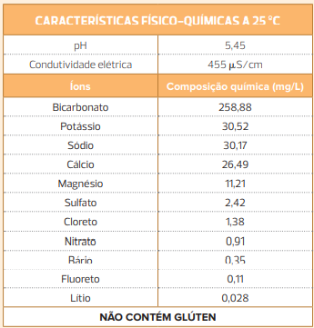
Considerando as informações do enunciado e do quadro acima, assinale a alternativa correta.
O ânion monovalente presente em menor quantidade em uma embalagem dessa água mineral é o NO
3– .
O ponto de ebulição da água mineral em questão, ao nível do mar, é menor do que 100
°
C.
A água mineral em questão conduz a corrente elétrica, devido à presença de vários íons em solução.
A massa de íons lítio presente em uma embalagem dessa água mineral é de 0,54 mg.
A água mineral em questão apresenta uma concentração hidrogeniônica igual a 1
·
10
–7
mol/L.
10
PUC-Minas 2015
A 25
°
C é possível dissolver aproximadamente 6,25 mol de cloreto de sódio em um litro de água. É correto afirmar que a solubilidade do cloreto de sódio em água, em g/mL, é:
0,3656
36,56
0,4625
46,25
11
Unigranrio-RJ 2017
O estudo da concentração de soluções aquosas faz-se necessário em muitos ramos da indústria química, onde há necessidade de quantidades exatas de componentes químicos reacionais. Entre os ramos da indústria química que utilizam conhecimentos de concentrações podem ser citados o de tratamento de água e efluentes e a indústria cosmética. Um volume de 50 mL de uma solução de MgC
ℓ2 a 2 mol/L é diluído até 1 litro de volume final. Sabendo que soluções diluídas de MgC
ℓ2 são totalmente solúveis e dissociáveis, podemos afirmar que a concentração, em mol/L, de íons cloreto na nova solução após a diluição será de:
0,1
0,2
1,0
2,0
4,0
12
UEG-GO 2016 Uma solução estoque de hidróxido de sódio foi preparada pela dissolução de 4 g do soluto em água, obtendo-se ao final 100 mL e, posteriormente, determinado volume foi diluído para 250 mL obtendo-se uma nova solução
de concentração igual a 0,15 mol/L. O volume diluído, em mL, da solução estoque, é aproximadamente:
26
37
50
75
13
Enem 2015 A hidroponia pode ser definida como uma técnica de produção de vegetais sem necessariamente a presença do solo. Uma das formas de implementação é manter as plantas com suas raízes suspensas em meio líquido, de onde
retiram os nutrientes essenciais. Suponha que um produtor de rúcula hidropônica precise ajustar a concentração de íon nitrato (NO
3–
) para 0,009 mol/L em um tanque de 5000 litros e, para tanto, tem em mãos uma solução comercial nutritiva de nitrato de cálcio 90 g/L.
As massas molares dos elementos N, O e Ca são iguais a 14, 16 e 40, respectivamente.
Qual o valor mais próximo do volume da solução nutritiva, em litros, que o produtor deve adicionar ao tanque?